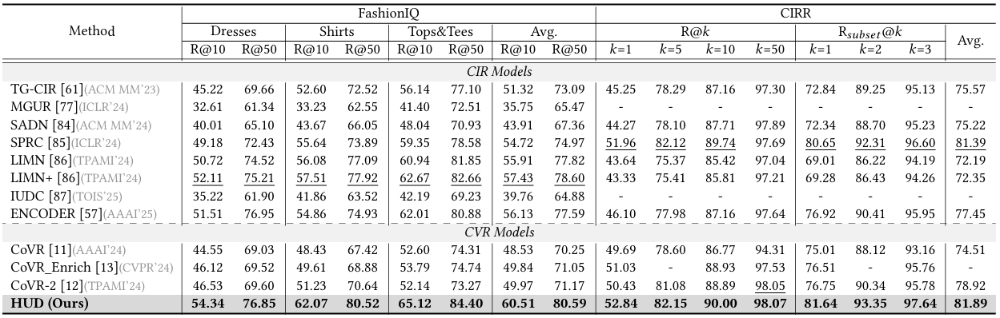

Experiment
Performance comparison on the test set of the CVR dataset, WebVid-CoVR and EgoCVR1 , relative to R@K(%). The overall best results are in bold, while the best results over baselines are underlined.

Performance comparison on the CIR dataset, FashionIQ and CIRR, relative to R@K(%). The overall best results are in bold, while the best results over baselines are underlined.
Ablation study on the CVR datasets, WebVid-CoVR and EgoCVR. Δ denotes the performance drop of the compared derivatives and is marked with the green background.